Черновик · большой кейс про набор документных инструментов · сплошные рамки — реальные экраны, пунктир — на экспорт
Hooh — от чтения документа к работе с ним
Сначала Hooh умел только читать — объяснял, что написано в документе. В следующем релизе он научился с документом работать: заполнять и подписывать формы, делать пометки, менять порядок и редактировать страницы, конвертировать и переводить. Получился полноценный набор инструментов для работы с документами на iOS. Самым трудным была не отдельная функция, а то, как дать всю эту мощь приложению для людей без юридической подготовки — и не превратить его в перегруженный профессиональный инструмент, и ни разу не подвергнуть риску исходный файл.
Проблема
Hooh умел прочитать документ — и на этом всё. Любое следующее действие — заполнить форму, подписать, сделать пометку, выровнять кривой скан, конвертировать перед отправкой — приходилось делать в другом приложении. Для неподготовленного пользователя именно на этом переходе терялась ценность и возникали ошибки: потерянный оригинал, перезаписанный файл. А каждый уход в стороннее приложение — это точка, где Hooh терял и пользователя, и повод за него платить
Задача
Превратить ридер в полноценную рабочую среду для документов на iOS — заполнение, подпись, пометки, редактирование, конвертация — и при этом сохранить простоту, за которую Hooh ценили, и гарантировать, что пользователь не теряет контроль над оригиналом и не портит его
Пользователи
Та же аудитория, что и у первого релиза: экспаты, цифровые кочевники, люди без юридической подготовки. Документы у них появляются постоянно — формы, договоры, сканы, справки. Им важно быстро с ними разобраться, а не осваивать набор инструментов
Скоуп
Набор инструментов на одном правиле: автоматизируем там, где это экономит время; любое действие обратимо; оригинал остаётся нетронутым. Smart Fill с ручным режимом, многоразовая подпись, система пометок и аннотаций, работа со страницами и редактирование, конвертация форматов и понятная модель версий
Процесс
Встречи с пользователями первого релиза показали закономерность: документ они понимали, но застревали, как только нужно было что-то с ним сделать, — а нужные инструменты были разбросаны по пяти разным приложениям. И в самих формах раз за разом повторялись одни и те же поля — имя, ID, адрес, номера, — которые у человека уже лежали в ранее загруженных документах. Отсюда направление: свести действие с документом туда же, где его понимание, и перестать просить перепечатывать то, что уже есть.
Все решения ниже подчинены одному ограничению — контролю. Для такой аудитории мощь безопасна, только когда она обратима и ничего не ломает. Поэтому правила сквозные: всё автоматическое — на виду, любое действие можно переопределить или отменить, оригинал остаётся нетронутым. Каждая функция — продолжение одного этого обещания.
1. Smart Fill — автоматизация с правом вето
Hooh распознаёт поля формы и подставляет данные из уже сохранённых документов — но ничего не делает втихую. Когда совпадение найдено, документы-источники закреплены вверху, чтобы было видно, откуда взяты данные; любое значение можно поправить прямо на месте; а одним тумблером вся форма возвращается к ручному заполнению. По умолчанию режим включён — ради сэкономленного времени, — но до ручного ввода всегда один тап. Если данных для поля нет, форма просто подсвечивает его и не мешает идти дальше: незаполненная форма — нормальное состояние, а не ошибка.
Развилка была одна: скорость против доверия — человек без юридической подготовки вписывает в форму свои паспортные данные, ИНН, адрес и не может проверить подставленное на глаз. Рассматривали три варианта:
— заполнять молча — отклонили: не видно, что и откуда подставлено, форме нельзя доверять;
— спрашивать подтверждение по каждому полю — отклонили: убивает ту самую экономию времени, ради которой всё затевалось;
— подставлять сразу, но с закреплёнными источниками, правкой на месте и тумблером «выключить всё» — выбрали.
Скорость — но без слепого доверия.
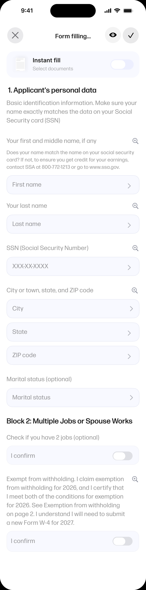
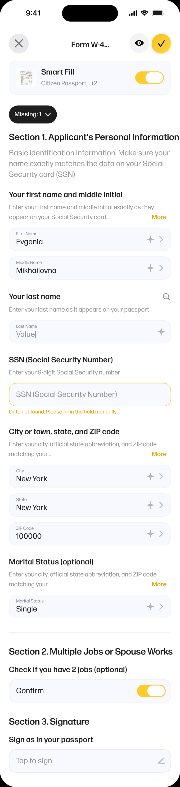
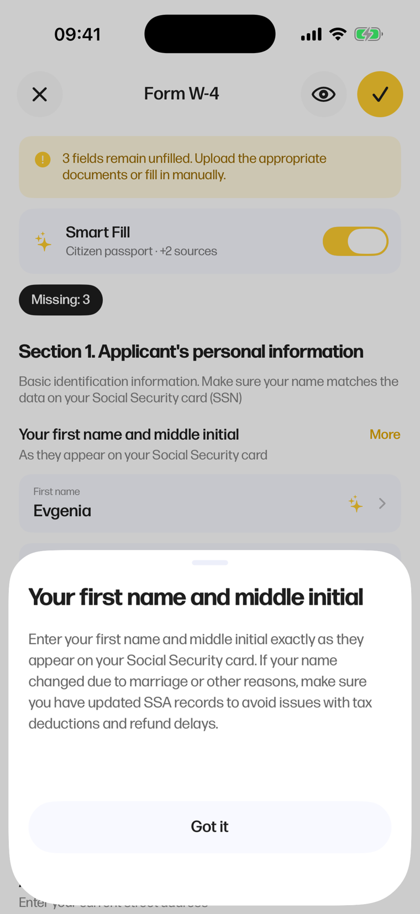
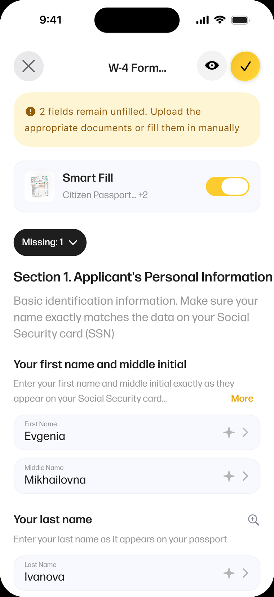
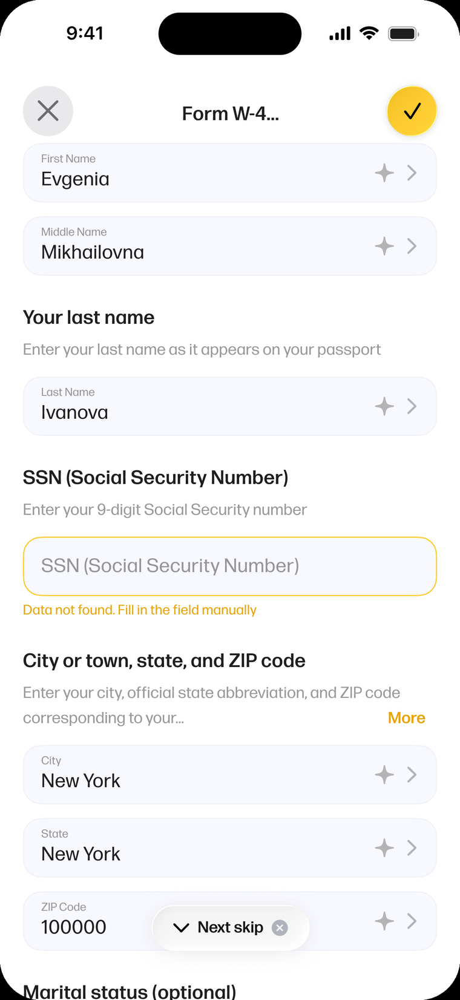
2. Подпись — один раз создал, дальше ставишь в один тап
Подпись создаётся один раз. Её можно нарисовать на холсте или сфотографировать готовую — дальше она хранится в библиотеке и одним касанием встаёт в любой документ. Саму подпись пользователь делает только однажды.
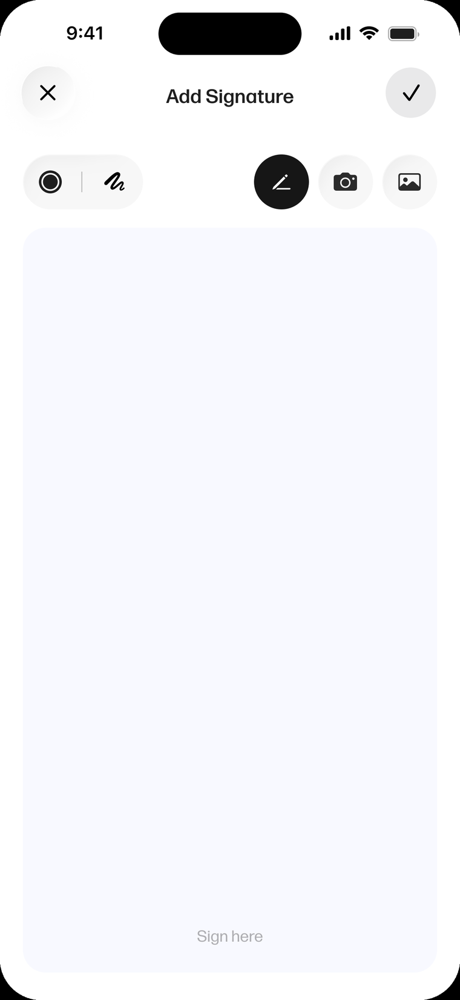
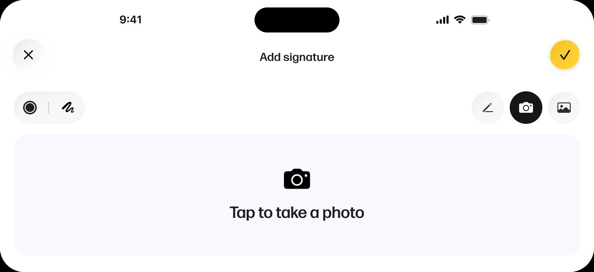
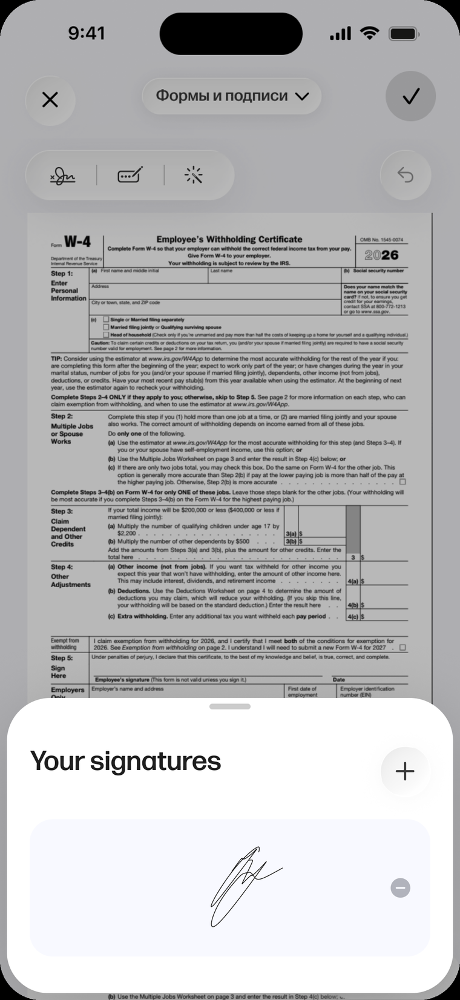
3. Аннотации и редактирование — мощно, но без порога входа
Разметка — обычно то место, где редактор превращается в перегруженный инструмент. В Hooh внизу один переключатель инструментов и единая система цвета на всё — маркер, текст, фигуры, рисование от руки, — поэтому контролов не становится больше. Инструмент появляется там, где коснулся пользователь, параметры открываются в одной шторке, а всё нарисованное лежит отдельным слоем поверх оригинала: можно отменить одну пометку или снять сразу всю разметку — исходник останется прежним. (Черновой текст — выверить по реальным экранам 12.x.)
4. Сохранение и версии — оригинал всегда в безопасности
Случайно перезаписать ничего нельзя. Оригинал остаётся нетронутым: можно сохранить новую копию или вынести её в отдельный документ, а все версии живут внутри одного файла — переключаются в верхней панели и переименовываются на месте. Работа над одной формой сохраняет каждое состояние и не засоряет список документов. Это опора всего набора: ни одно действие не портит исходное.
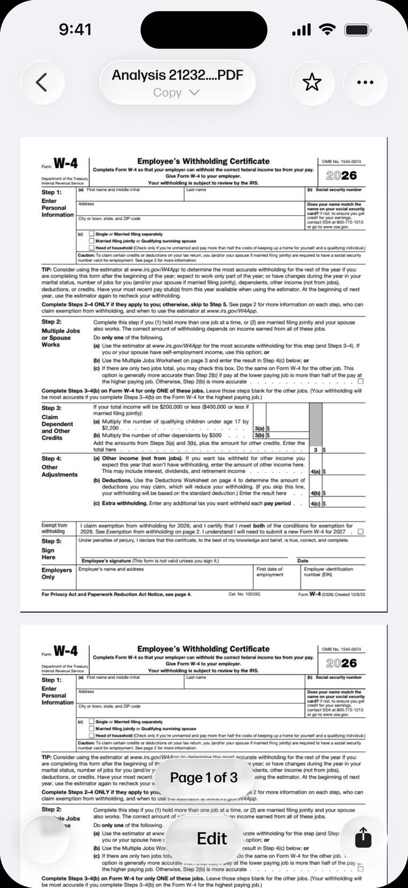
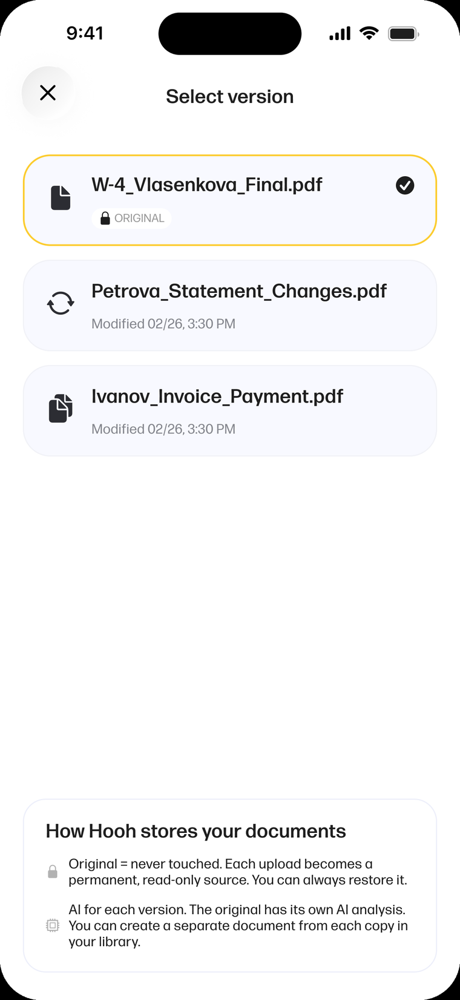
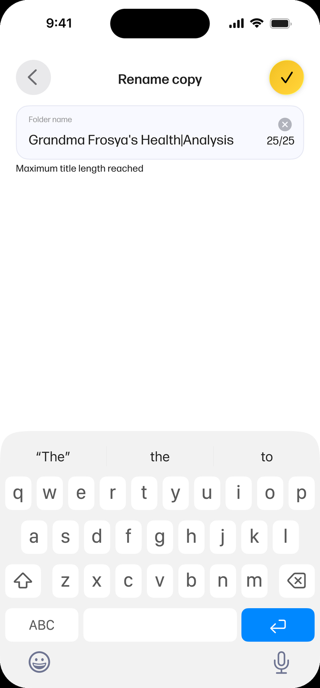
Остальные инструменты
Ещё шесть инструментов достраивают рабочую среду — все на том же правиле и доступны с того же экрана документа. Здесь коротко; каждый — законченный рабочий сценарий.
Конвертация
PDF в Word, Excel, PowerPoint и другие
Перевод
Перевод документа прямо внутри приложения
Объединение PDF
Собрать несколько файлов в один документ
Сжатие
Уменьшить файл, не выходя из приложения
Извлечение текста
Достать выделяемый текст из скана
Управление страницами
Переставить, повернуть, добавить и удалить страницы
Итог
Набор спроектирован целиком и передан в разработку. По отдельности это инструменты для заполнения, подписи, разметки и конвертации; вместе — одно высказывание: Hooh умеет с документом гораздо больше, чем просто его читать, и при этом не отбирает контроль у того, кто им пользуется.
В рамках этого проекта работа не дошла до публичного релиза, но дизайн-система, компоненты и сценарии задокументированы и готовы к выпуску, как только продукт к ней вернётся.